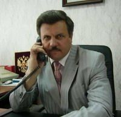

Уважаемые посетители!
Я рад приветствовать вас на сайте администрации МР "Тарусский район". Надеюсь, что вы найдете здесь интересную и полезную информацию.
Евгений Михайлович Мальцев, Глава администрации

Я рад приветствовать вас на сайте администрации МР "Тарусский район". Надеюсь, что вы найдете здесь интересную и полезную информацию.
Евгений Михайлович Мальцев, Глава администрации

Народное гулянье «Широкая Масленица в Тарусе» с каждым годом становится всё ярче и привлекательней.
С самого утра украшенная машина с чучелом Масленицы разъезжала по улицам города, приглашая жителей и гостей Тарусы на праздничную площадь. Здесь уже вовсю дымились мангалы и самовары. Предприниматели Баранова М.А., Верзилин Е.А.,Абдуллаев Н.Т. и коллектив кафе «Ока» постарались на славу. Шашлык был ароматным и вкусным. Хорошая погода и большой праздничный концерт на украшенной сцене подогревали аппетит публики. На игровых площадках «Разгуляй-поле» и «Детские забавы» можно было поучаствовать в народных играх и получить призы.
ПодробнееТакое название носит Всероссийская антинаркотическая акция, проходящая в области с 18 по 29 марта 2013 года.
В ходе акции органами внутренних дел осуществляются целевые оперативно-профилактические мероприятия по проверке мест массового пребывания подростков и молодёжи, направленные на выявление и пресечение преступлений, связанных с хранением, изготовлением и сбытом наркотических средств; по привлечению к уголовной ответственности лиц, вовлекающих несовершеннолетних в незаконный оборот наркотиков, и перекрытию каналов поступления наркотических средств.
В ходе антинаркотической акции организована работа телефона доверия в УМВД России по Калужской области – 128. Телефон бесплатный. Также можно звонить по тел.: 2-50-53 или 02 – дежурная часть МО МВД РФ «Тарусский»; 8 (4842) 502-800 – УМВД РФ по Калужской области.
Если вам что-либо известно о местах, где «торгуют смертью», о лицах, распространяющих наркотики, вовлекающих в эту преступную деятельность несовершеннолетних, о каналах поставки наркотиков в район и т.д. – звоните по любому из указанных номеров. Конфиденциальность и вознаграждение гарантируются.
В рамках оптимизации процесса обслуживания абонентов по Калужскому филиалу ОАО «Ростелеком» с 1 марта 2013 года будет закрыт Центр продаж и обслуживания клиентов в г. Тарусе Калужского филиала ОАО «Ростелеком». В связи с этим будет изменена схема обслуживания пользователей услуг электросвязи, проживающих в г. Тарусе и Тарусском районе.
Прием платежей за услуги Калужского филиала «Ростелеком» от абонентов г. Тарусы и Тарусского района, предоставление услуг связи за наличный расчет (внутризоновая, междугородная, международная связь, услуги телеграфной связи), продажи карт ЕТК, ЕКС, и УУС будут осуществляться в отделениях почтовой связи Тарусского района согласно действующему договору о взаимодействии между ОАО «Ростелеком» и ФГУП «Почта России».
Также оплатить услуги, предоставляемые Калужским филиалом «Ростелеком» возможно в отделении Сберегательного Банка РФ; через платежные терминалы QIWI и другие платежные системы. Более подробная информация доступна по адресу: www.rt.ru. Для оплаты услуг Интернет достаточно знать номер лицевого счета, для оплаты услуг телефонной сети – номер телефона.
Прием заявлений на предоставление услуг Калужского филиала ОАО «Ростелеком», консультации по оказываемым услугам и сервисам круглосуточно осуществляются по единому бесплатному номеру 8-800-450-0-450.
Необходимую информацию по состоянию лицевого счета, техническую поддержку по услугам Интернет можно получить, позвонив по номеру 150 или 8-800-450-0-150. Для заявок в бюро ремонта, по услугам телефонии следует обращаться по номеру 125. Передача телеграмм осуществляется по номеру 126.
Для решения оперативных вопросов, в т.ч. и с абонентами, в г. Таруса назначен Административный директор Грицинин Виталий Владимирович, контактный телефон 8-(484-35)-2-14-00, мобильный 8-910-914-06-89.
Информация о деятельности компании ОАО «Ростелеком» размещена в сети Интернет по адресу: www.center.rt.ru. Информация Калужского филиала ОАО «Ростелеком» доступна на сайте – www.kaluga.ru.